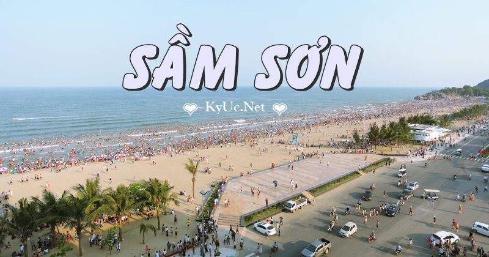

Đặng Tuấn Minh
Nơi sinh: Hà Nội
Ngày sinh: 28/08/2002
Sở thích:
Bài hát The Nights:
Phim SpiderMan:
Mạng xã hội: Facebook , Instagram
Lịch sử:
Học tập
-
Cấp 1: Trường Tiểu học Tiến Thịnh
Bảng điểm:
Môn học TBKI TBKII Toán 10 10 Lý 10 10 Hóa 10 10 -
Cấp 2: Trường THCS Tiến Thịnh
Bảng điểm:
Môn học TBKI TBKII Toán 9 9 Lý 9 9 Hóa 9 9 -
Cấp 3: Trường THPT Yên Lãng
Bảng điểm:
Môn học TBKI TBKII Toán 8 8 Lý 8 8 Hóa 8 8
Du lịch
-
Năm 2018, từng đi du lịch Sầm Sơn. Khu du lịch Sầm Sơn Thanh Hoá nằm cách trung tâm thành phố 17km, là một trong những bãi biển đẹp nhất Bắc Trung Bộ và được mệnh danh là “chốn nghỉ dưỡng lý tưởng nhất Đông Dương”. Nơi đây có đường bờ biển chạy dài 6km từ chân núi Trường Lệ với độ dốc, độ mặn nước biển vừa phải, rất thích hợp cho các hoạt động vui chơi, tắm biển,...

Với dòng nước biển trong xanh mát lành, những bãi cát trắng mịn trải dài dưới nắng, du khách đến du lịch biển Sầm Sơn sẽ được thả mình trong thế giới vô tận của thiên nhiên, lắng nghe tiếng sóng biển vỗ về, cảm nhận tiếng rì rào của những rặng cây phi lao trong gió. Và quả đúng như Le Breton, học giả người Pháp từng nhận xét: “Sầm Sơn là bãi tắm tốt nhất để phục hồi sức khỏe”.Ảnh minh họa
-
Năm 2020, từng đi du lịch Hạ Long, thăm quan các danh lam thắng cảnh.
Vịnh Hạ Long là di sản thiên nhiên thế giới được UNESSCO công nhận. Hạ Long được ví như “Một bức tranh thủy mặc khổng lồ vô cùng sống động”, đó là món quà vô giá mà thiên nhiên ban tặng cho Quảng Ninh nói riêng và ngành du lịch nước ta nói chung. Không khí của Hạ Long rất trong lành, cảnh lại đẹp, hải sản cũng ngon kèm thêm đặc sản “sá sùng” nữa nhé. Nói chung đi Hạ Long về bạn sẽ cảm thấy rất tuyệt vời.